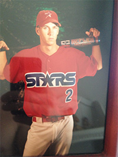
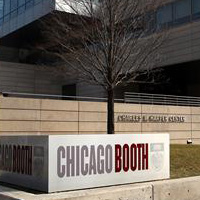

I'm often confused for Clark Kent, what with my black glasses, white tees and being raised in Iowa. Sadly, my super powers only extend as far as I can throw a baseball. My first love, I spent some of my favorite summers fielding ground balls at the hot corner, playing Mario Kart with my team, and competing in state tournaments.

No, I didn't grow up on a farm. But the University of Iowa beckoned. As it was one of the best Actuarial Science programs in the nation and in my backyard, once I realized Mathematics was in my future, it was an easy decision.
One of a few students to get back-to-back paid internships with PwC's startup spin-off, Unifi.
My parents moved down to Texas, y'all, so I followed. And so began my Management Consulting career designing incentive reward systems for Fortune 10 companies at Towers Watson.

Don't call it a comeback. This time to get my MBA at the University of Chicago Booth School of Business.
I moved for love, but it didn't work out. I joined a startup, but it didn't work out. So I changed my life, focused on the work and the people I loved and something new, and better, was born. The moment I stopped compromising on quality in both these relationships, is the moment I became. I wish this for you.
I gave away everything I owned, save for a suitcase, my iPhone, MacBook, and Journal, and began the journey that would lead me through the next third of my life. I moved home to spend time with the two people who gave me everything, my parents, so I wouldn't have to regret the time I didn't spend with them.
I believe knowledge and wisdom should be free. I've struggled in the first third of my life to gain only a bit, but I'd love to share it with you.